|
Vitesse - Roda JC 2-0 24 november 2001 |
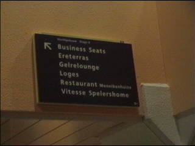
Dankzij Brocacef-Intramuraal konden we via
broeder Jacobus voor nop naar de businessseats.
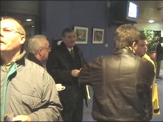
Naast Henk Bakker en onze VC, behoorde ook
Pieter van Vollenhove tot de upper-plebs.
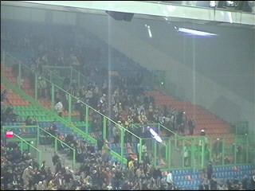
Het aantal meegereisde Roda-supporters viel
een klein beetje tegen.
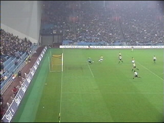
Al na 7 minuten kwam Vitesse op voorsprong na
een panklare voorzet van Peeters op Vd Schaaf.
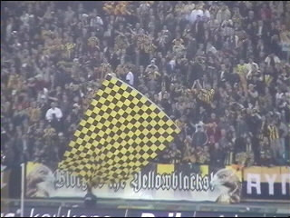
Feest bij het fanatieke gedeelte van de Vitesse-
fans achter de goal.
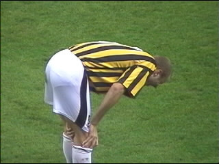
Peeters halverwege de eerste helft geblesseerd.
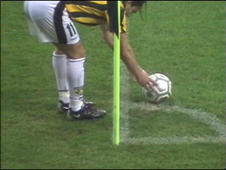
Er werd gespeeld met zilverkleurige ballen.
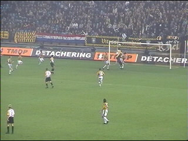
Een kopbal van Vrede die op de lat zal vallen.
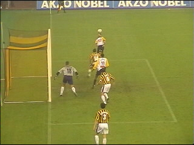
Kopkans voor Anastasiou.
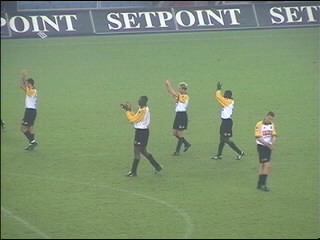
Een bedankje in het mistige Gelredome.
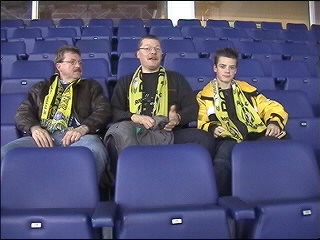
Helaas geen punten...
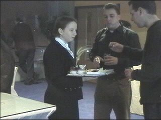
...maar wel lekkere hapjes en gratis bier!
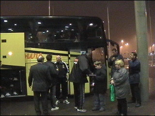
Vrede zet nog een handtekening voordat hij aan
boord gaat bij het mistroostige gezelschap.
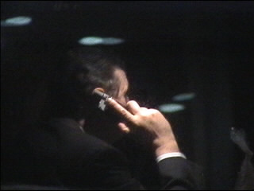
Sir George beluistert zijn voicemail.
©KPD